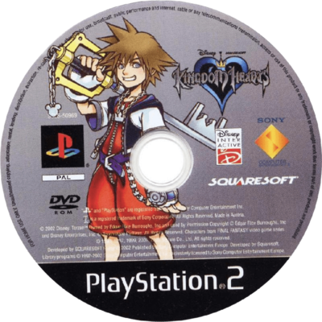
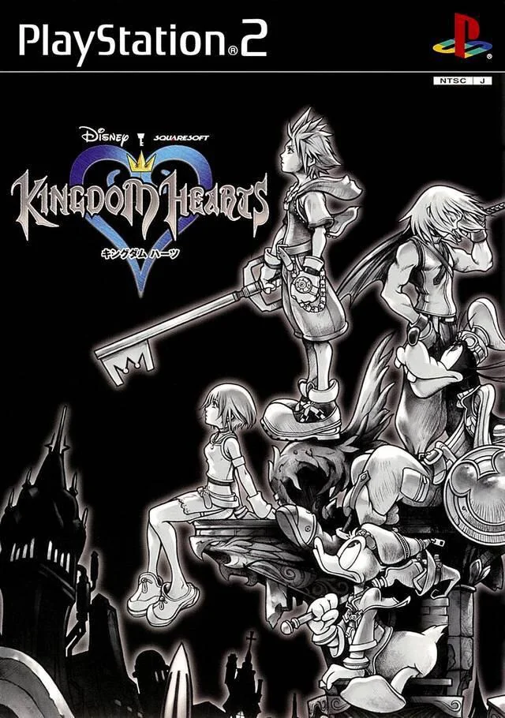
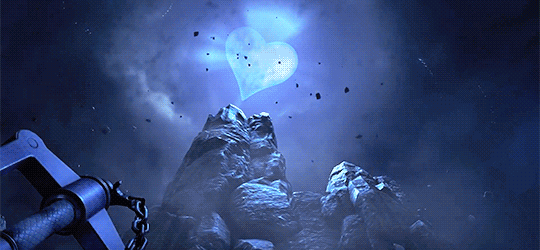
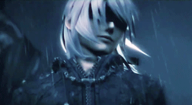
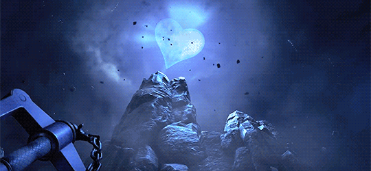
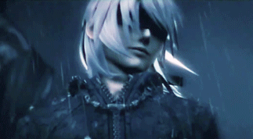

Kingdom Hearts 1

Kingdom Hearts 1
Aventura de acción y rol mezclando Disney y Final Fantasy. Sora, Donald y Goofy luchan contra la oscuridad.



La continuación de Sora y sus amigos. Explora nuevos mundos, mejora habilidades y enfréntate a la Organización XIII.

Un oscuro viaje a través de un mundo devastado por la guerra, donde la música y la locura se entrelazan.

 


